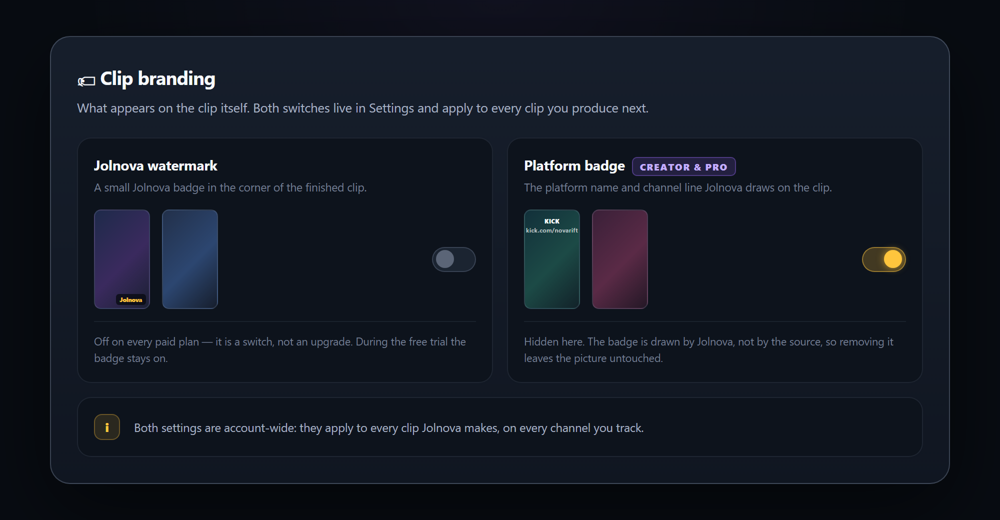
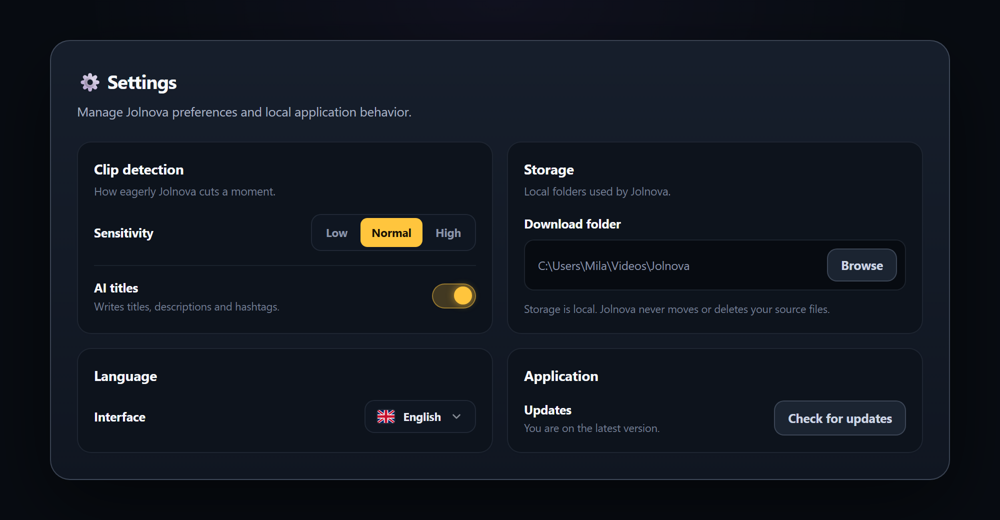

TITEL UND ANGABENDie KI schreibt eine einzige Sache: den Titel eines Clips, den du freigegeben hast
Wenn du einen Clip freigibst, werden sein Transkript und eine kurze Chat-Zusammenfassung verschickt, damit Titel, Beschreibung und Hashtags dafür geschrieben werden können. Dein Video verlässt deinen Computer nie.
- Titel entstehen bei der Freigabe, aus dem, was im Clip tatsächlich passiert
- Vorschläge für Beschreibung und Hashtags
- Kopier sie selbst und füg sie in der Plattform ein
- Keine KI-Bewertung, keine Qualitätsnote — diese Entscheidung triffst du in der Prüfliste
Jolnova veröffentlicht in deinem Namen auf keiner Plattform. Du lädst den fertigen Clip herunter und postest ihn selbst.
Clip-Details

CLIP-BRANDINGBestimm, was auf deinem Clip steht
Zwei Dinge können auf einem fertigen Clip erscheinen, und beide sind Schalter statt Upgrades: das Jolnova-Wasserzeichen und das Plattform-Abzeichen mit dem Kanalnamen.
- Wasserzeichen an oder aus in jedem bezahlten Tarif
- Plattformname und Kanalzeile ausblenden — Creator und Pro
- Das Abzeichen wird von Jolnova gezeichnet, das Entfernen lässt das Bild also unberührt
- Beide Einstellungen lassen sich in einer Clip-Vorlage speichern
Während der kostenlosen Testphase bleibt das Jolnova-Wasserzeichen an. Jeder bezahlte Tarif kann es in den Einstellungen abschalten.
Clip-Branding

TEXT-OVERLAYSetz deine eigene Zeile aufs Video
Tipp den Text, bestimm, wo er sitzt, wie groß er ist, welche Farbe er hat und ob er einen deckenden Hintergrund bekommt. Der Text wird ins Video eingebrannt und übersteht damit erneutes Hochladen.
- Platzierung oben, mittig oder unten
- Vorlagen für Größe und Farbe
- Schatten oder eine deckende Box hinter dem Text
- Live-Vorschau, bevor du es anwendest
- Entferne es später und der Clip kehrt in seinen Originalzustand zurück
Das Text-Overlay gibt es in jedem Tarif, auch in der kostenlosen Testphase.
Text-Overlay

BILD-OVERLAYSetz ein Logo an eine beliebige Stelle im Bild
Wähl ein PNG oder JPG, zieh es dorthin, wo du es willst, und ändere die Größe an der Ecke. Anwenden brennt es in den Clip ein; Entfernen gibt dir das saubere Video zurück.
- Ziehen zum Platzieren, Eckgriff zum Skalieren
- Vorschau auf dem echten Bild
- So oft hinzufügen und entfernen, wie du willst
- Jeder Effekt wird neu vom unberührten Original angewendet — kein Generationsverlust
Nichts wird auf einen bereits komprimierten Export draufgestapelt — ein fünfmal bearbeiteter Clip sieht also aus wie ein einmal bearbeiteter.
Bild-Overlay

ZUSCHNEIDEN UND KONTEXTSchneid den Leerlauf an beiden Enden weg
Die Erkennung bringt dich nah heran; das Zuschneiden macht es genau. Zieh die Griffe für Anfang und Ende, bis der Clip genau mit dem Moment beginnt, und sieh die entstehende Länge dabei mit.
- Getrennte Griffe für Anfang und Ende
- Die gewählte Dauer wird beim Ziehen angezeigt
- Bildgenauer Schnitt, einmal neu kodiert
- Der Clip-Kontext holt zusätzliche Sekunden aus der Originalaufnahme zurück — ±3 Sek. bei Starter, ±7 bei Creator, ±10 bei Pro
- Später erneut zuschneiden — du schneidest immer vom Original
Clip zuschneiden

EXPORTDorthin herunterladen, wo du es wirklich willst
Freigegebene Clips werden in voller Qualität in einen Ordner deiner Wahl gespeichert. Speichere einen einzelnen oder schick einen ganzen Bereich in einem Schritt in einen Ordner.
- Wasserzeichen an oder aus — deine Entscheidung in jedem bezahlten Tarif
- Den Zielordner selbst wählen
- Einen einzelnen Clip oder einen ganzen Bereich speichern
- Deine Originale bleiben unberührt
Die Exportauflösung richtet sich nach deinem Tarif und deiner Quelle: 720p bei Starter, 1080p bei Creator und 4K bei Pro, wenn die Quelle 4K ist. Twitch und Kick senden höchstens in 1080p.
EINSTELLUNGENEinmal einstellen, dann in Ruhe lassen
Entscheide, wie eifrig Jolnova einen Moment schneidet, wo fertige Clips gespeichert werden und welche Sprache die App spricht. Diese Einstellungen liegen auf deinem Rechner.
- Erkennungsempfindlichkeit: Wenige, Ausgewogen oder Viele
- Dein eigener Download-Ordner
- Aufräumbudget für Aufnahmen, in GB
- Oberfläche auf Englisch oder Türkisch
- Versions- und Updateprüfung
Einstellungen
